2025–26: ARGO
ARGO uses a tumblehome hull, in which the sides curve inward above the waterline. This geometry improves paddler reach and stability but makes the hull wider at its base than at the gunwales, which prevents a one-piece mold from being removed after casting. In previous seasons, concrete shrinkage during curing required the mold to be destroyed for removal. ARGO was also the largest hull the team had built, and the team aimed to eliminate the cost of outsourced CNC machining.
Mold fabrication
- Cross-sections. Hull cross-sections were exported from Fusion 360 at 12 in intervals, retaining the offset from the gunwale line to the stern axis so the hull could be cast directly on the mold.
- Wall allowance. A 5/8 in edge was added to each section from the gunwale to the axis, serving as a thickness guide at the edges.
- Templates. Each section was laser cut from 1/4 in plywood, which resists the heat of the cutting wire.
- Cutting. Insulation-foam boards were glued into 12 in blocks. Templates were fixed to both faces of each block and traced with the hot-wire cutter, producing a lofted section between adjacent stations.
- End caps. The 32 in end caps were rough-cut from Styrofoam with the hot wire and hand-sanded to final shape. The end caps remain in the canoe after casting.
- Assembly. Sections were fixed to the casting table with two diagonal dowels in custom 3D-printed holders. Gaps were filled with spray foam and sanded smooth, and the mold was wrapped in a stretch-fabric release layer.
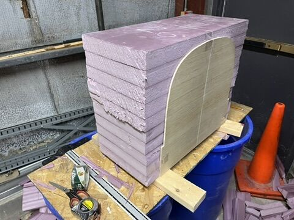
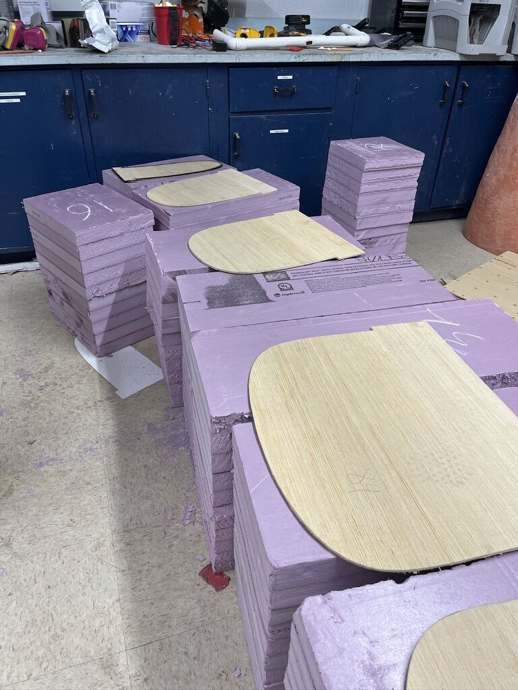
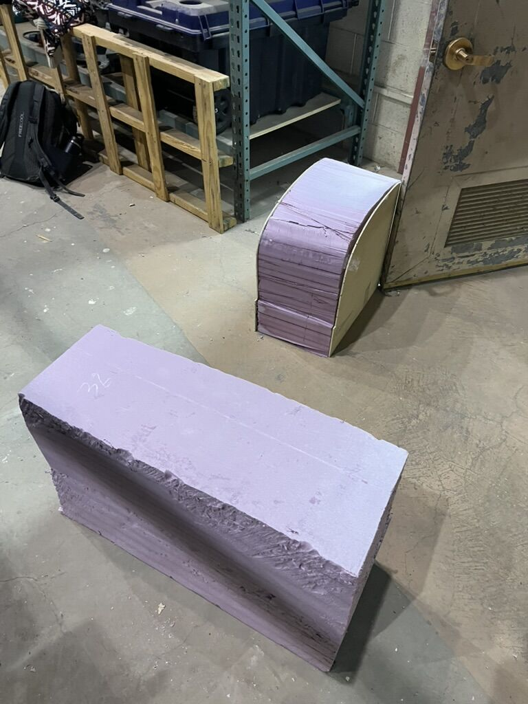
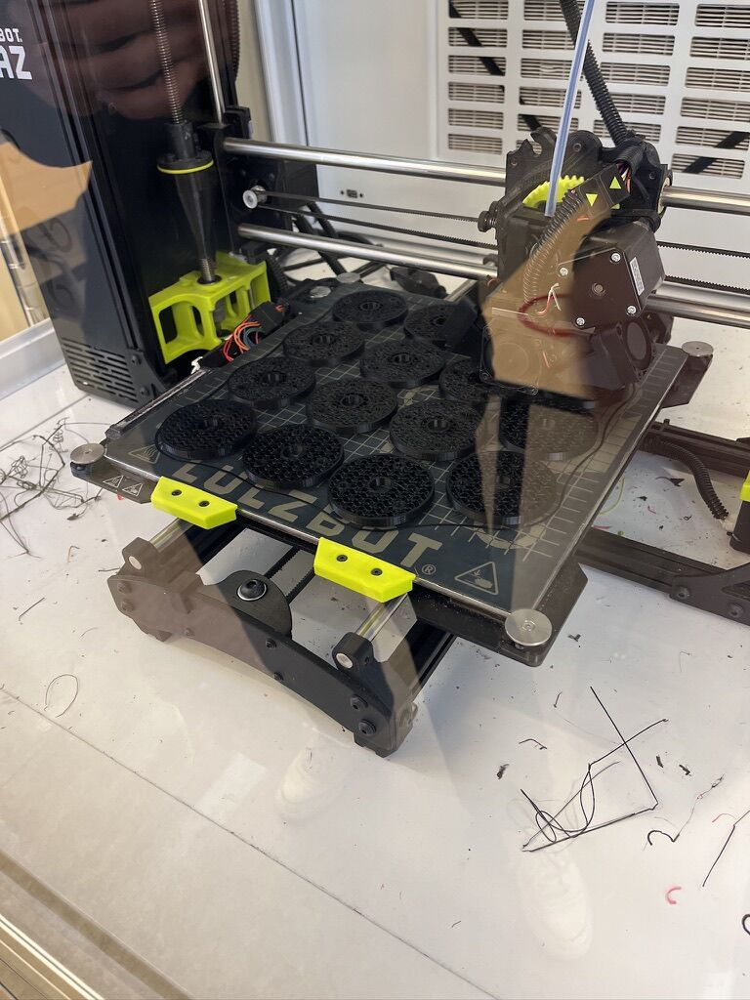
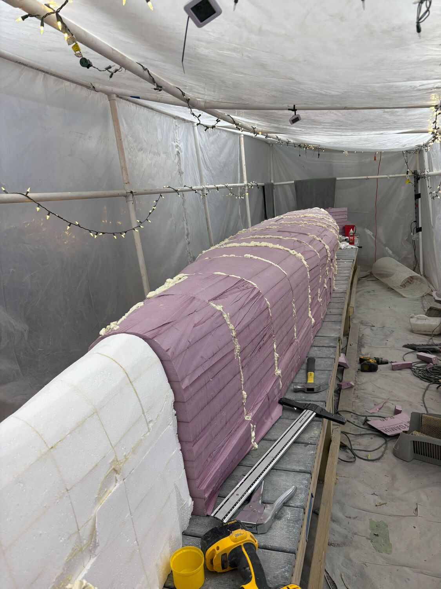
Demolding design
The four center sections, referred to as the "Core Four," have the largest overhang. Each was given an additional T-shaped cut that divides it into three pieces. During demolding, the center piece is removed first, allowing the two side pieces to move inward and slide out. The remaining sections are then moved toward the center and removed individually. This allowed the canoe to be demolded without destroying the mold, and the majority of the foam can be reused.
Figure 7. Core Four section with T-cut, and removal sequence.
Casting and curing
ARGO was cast on January 24, 2026, as scheduled. The mold sub-team placed concrete by hand at a rate of approximately two batches every ten minutes.
- First layer (3/8 in): placed starting four feet from the bow and proceeding in both directions, using 3/8 in rubber straps at 12 in intervals as thickness references.
- Reinforcement: SpiderLath fiberglass mesh placed in 24 in sections with 2 in overlaps.
- Second layer (1/4 in): thickness verified with marked gauges in each 4 in square area, then floated to reduce sanding.
- Curing: wrapped in plastic within the hydration tent and maintained above 85% relative humidity for three weeks.
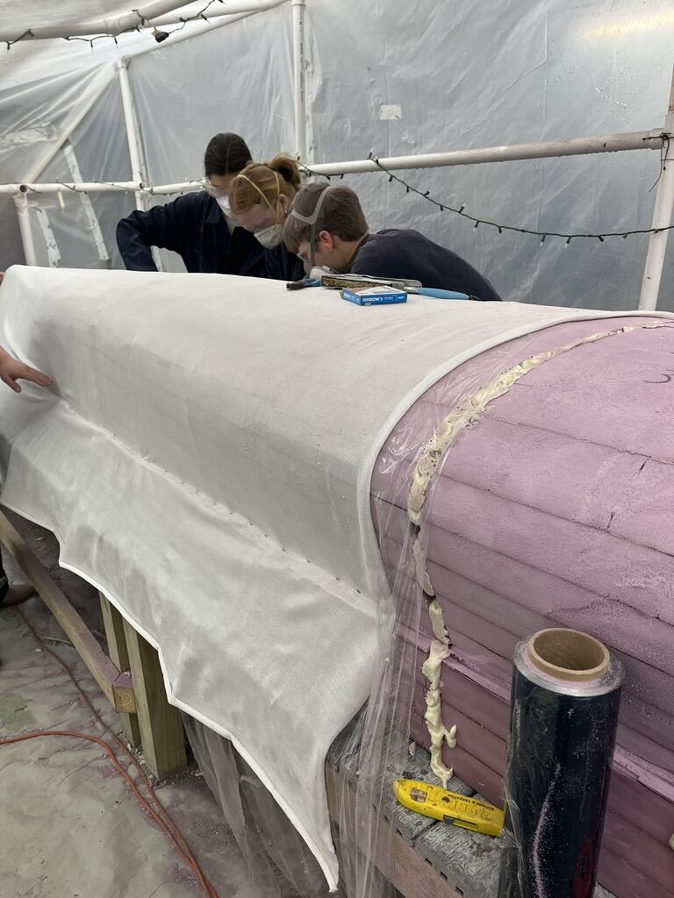
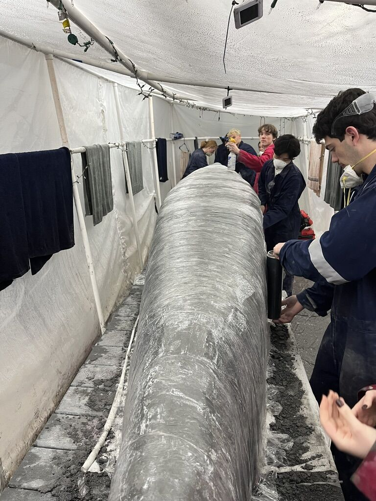
Results
The in-house hot-wire process required approximately three fewer weeks and several thousand dollars less than outsourced CNC machining. Dimensional accuracy was slightly lower than CNC machining and was corrected by hand-sanding. The sectioned center design allowed the canoe to be demolded without destroying the mold.
- Calculated midship freeboard under four-paddler loading was approximately 7.3 in, exceeding the 6 in requirement. The FEA result was in close agreement.
- All new mold sub-team members were trained in CAD during the mold design process.
- The team competed at the 2026 ASCE Upstate New York Student Symposium at RIT, April 9–11, 2026.
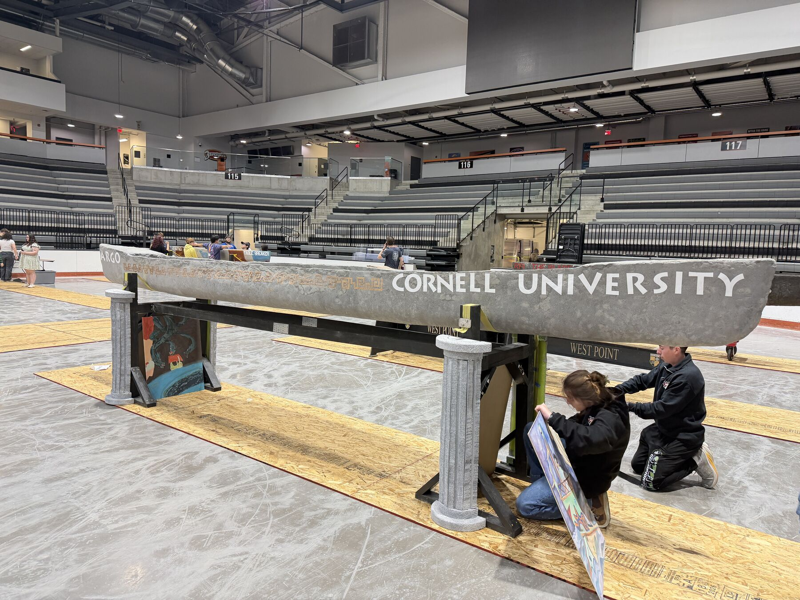
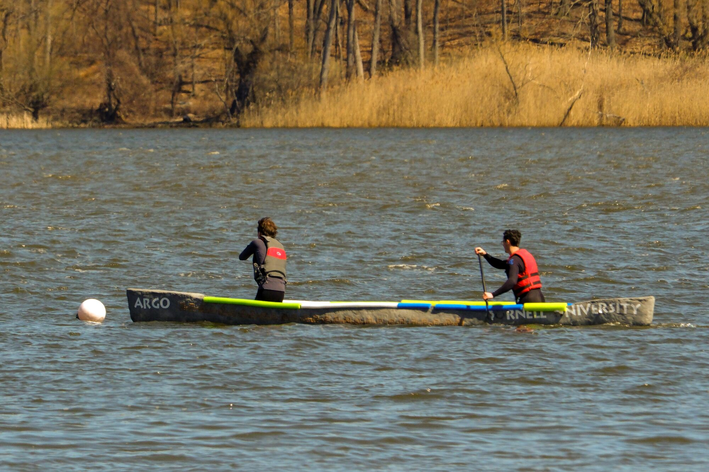
2026–27 canoe
- Hull CFD: CFD analysis in ANSYS Fluent to compare revisions of the approximately 20 ft hull before the geometry is finalized.
- Reusable mold: development of a foam mold process that withstands practice casts and the final cast, with tighter casting tolerances and less repair between pours.
- Design inputs: incorporation of mix sub-team test results, revised competition rules including a reduced wall thickness, and machining limits into hull and mold revisions.
- Tooling: the team is building a larger hot-wire cutter and 3D-printed depth gauges for casting.
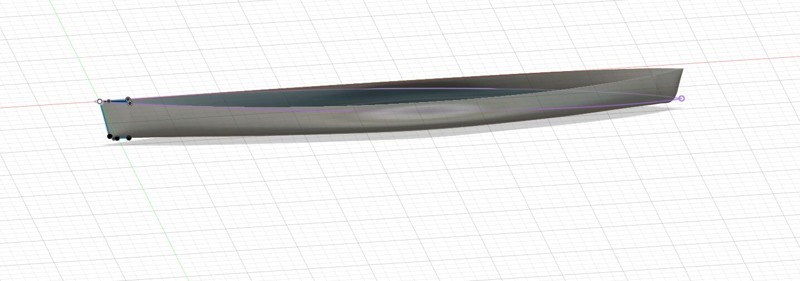
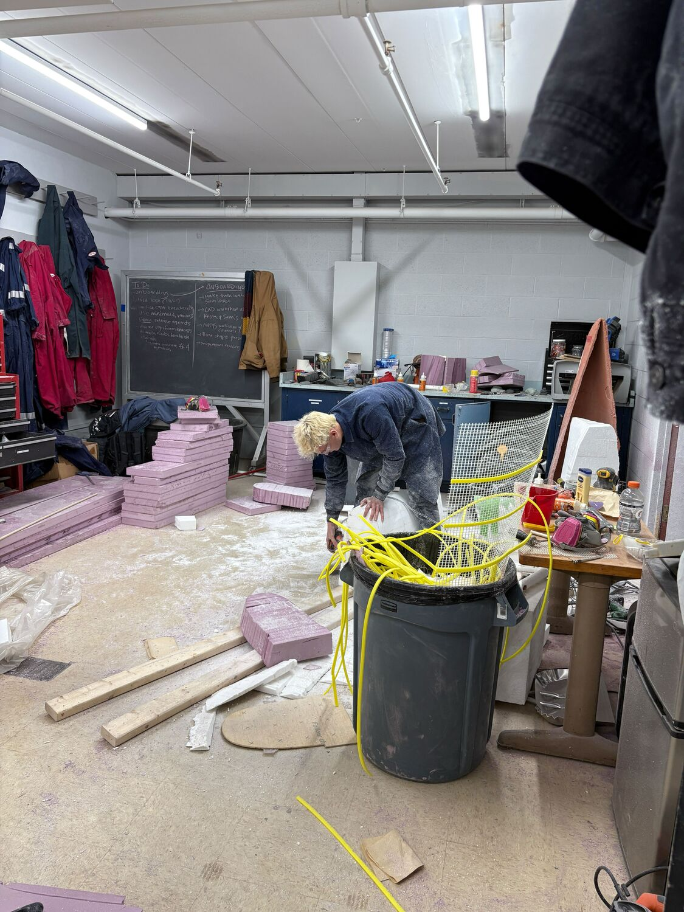